Al. Rio Negro, 1084 - Alphaville Industrial, Barueri
Thais Tutuy
Talvez esteja vivendo um destes momentos
O espelho muitas vezes reflete o estresse do dia a dia e a ação do tempo, trazendo sinais que não condizem com como nos sentimos por dentro. O cuidado certo é o espaço para resgatar a sua melhor versão.
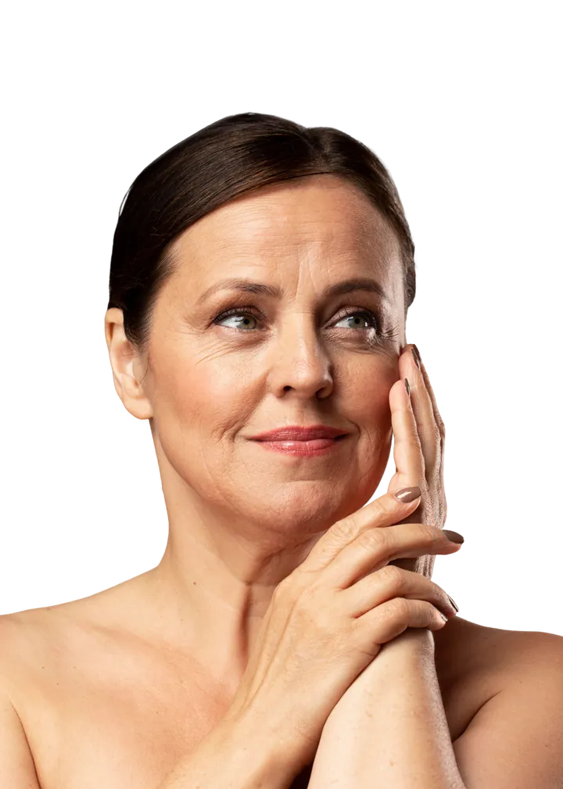
Sinais do tempo
Linhas de expressão marcadas, flacidez e a sensação de que o rosto está perdendo a sustentação e a firmeza natural da juventude.
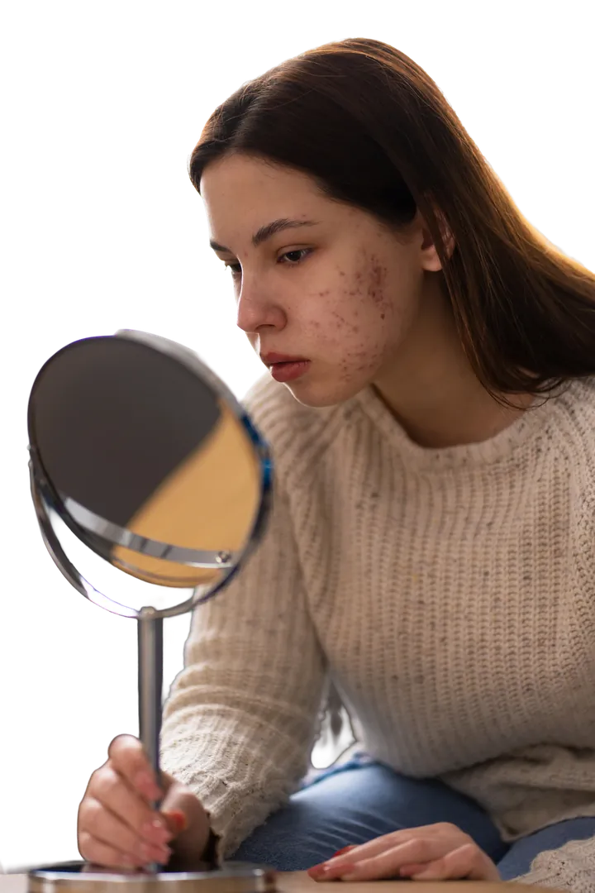
Acne e Oleosidade
Espinhas persistentes, cravos e inflamações que não apenas machucam a pele, mas afetam diretamente a sua autoestima e segurança.
Textura e Poros Dilatados
Sensação de pele áspera, poros muito aparentes e dificuldade para manter um aspecto liso e uniforme no dia a dia.
Método vira tempo
Buscando uma pele firme, viçosa e luminosa – sem botox
Depois de anos atuando na área da estética, eu cansei de protocolos prontos que prometem o mundo, mas não servem para todas as peles. Sabe por quê? Porque cada pele é única. E nada mais justo do que ter um tratamento desenhado especificamente para você.
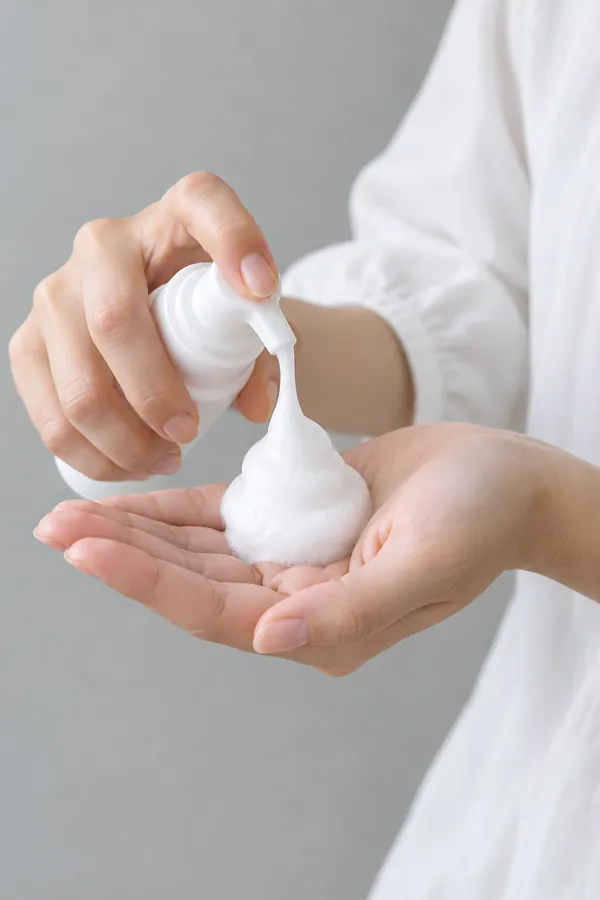
Chega de protocolos engessados. A sua pele conta a sua história.
Depois de anos atuando na estética, cansei de tratamentos prontos que não servem para todas as pessoas. Cada pele é única. O Método Efeito ViraTempo nasceu para oferecer um gerenciamento 100% personalizado. Aqui você não entra em um protocolo padronizado; você garante um método exclusivo pensado para tratar a sua pele como um todo.
Sem botox!
É possível tratar o envelhecimento de forma natural.
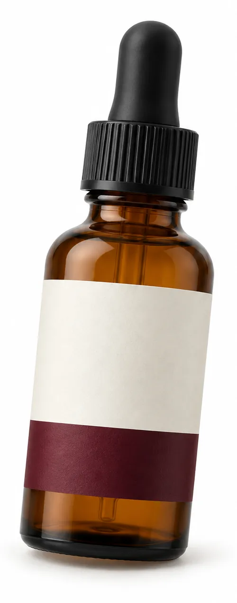
100% Personalizado
Melhora de Textura e Viço
Controle de Acne e Manchas
Suavização de Rugas
Nossos tratamentos
Como podemos transformar a sua pele hoje?
Cada tratamento é planejado de forma individualizada, a partir de uma análise facial criteriosa e das necessidades de cada paciente. A proposta é promover equilíbrio, naturalidade e resultados elegantes, respeitando a individualidade e a harmonia facial.
Procedimento personalizado para o seu biotipo cutâneo. Mantém a pele limpa, livre de cravos e melhora a textura e o viço. Finalizamos com alta frequência e Led/Laser para acelerar a recuperação.
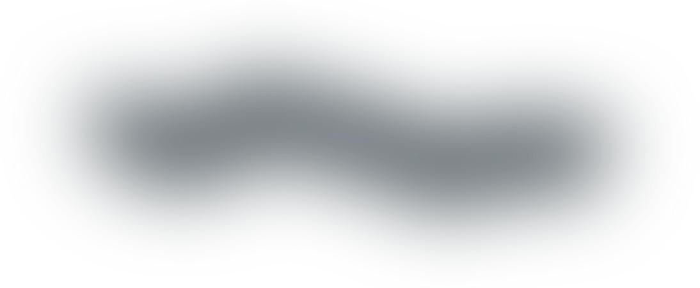
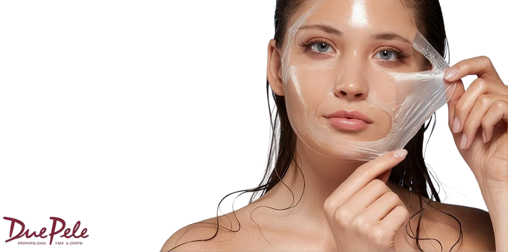
Peeling
Acelera o processo de renovação celular. Melhora a textura, previne o envelhecimento, minimiza manchas, reduz poros dilatados e auxilia fortemente no controle da acne.
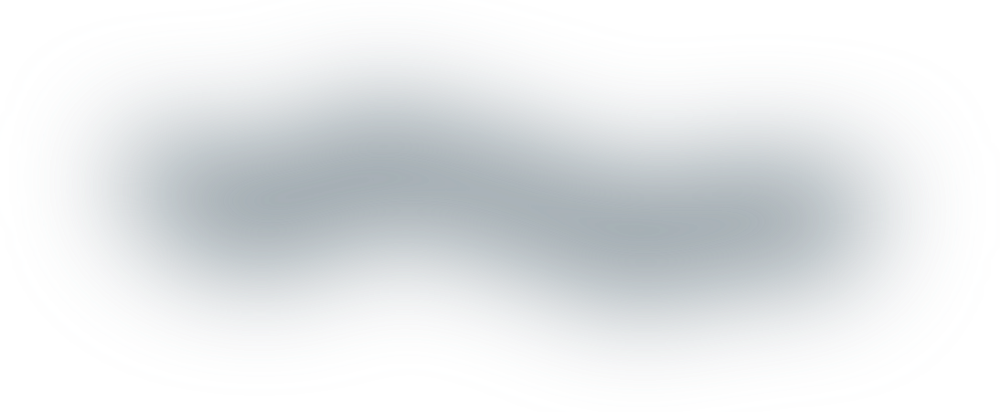
Microagulhamento
O verdadeiro estímulo de colágeno para uma pele mais firme. Atenua linhas de expressão e rugas, afina a aparência dos poros, devolve o viço e ilumina o rosto.
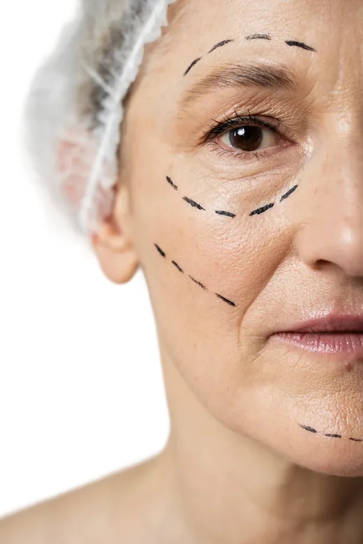
Lifting Facial
Promove um lifting instantâneo com efeito cumulativo. Diminui linhas finas, entrega uma aparência de pele descansada e gera um estímulo leve de colágeno para maior firmeza.
Spa Facial
A revitalização que seu rosto pede. Devolve viço, maciez e hidratação profunda de forma totalmente personalizada.
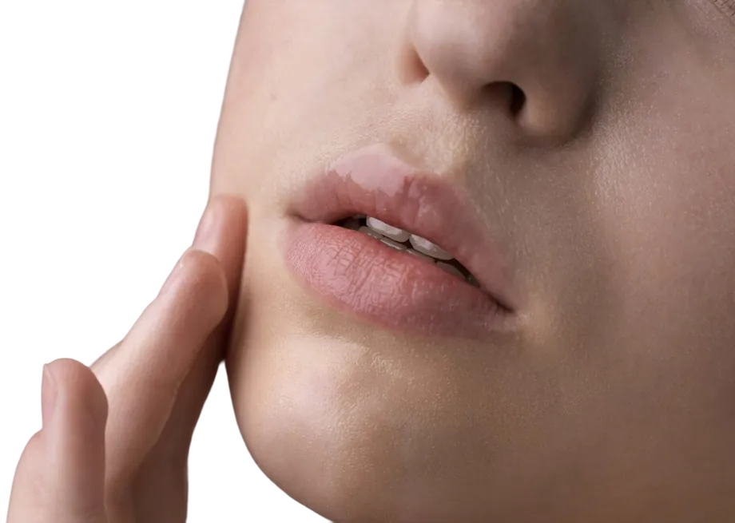
Lábios de Seda
Microagulhamento labial totalmente indolor. Remove células mortas, hidrata de dentro para fora e realça o contorno dos lábios. Promove um aumento leve do volume e suaviza as linhas de expressão (código de barras).
Sobre nós
Quem está por trás do seu cuidado
Muito prazer, eu sou Thais Tutuy. Sou especialista em estética facial e a criadora do Método Efeito ViraTempo. Minha missão sempre foi ir além da superfície da pele e dos protocolos engessados. Eu acredito que a estética deve ser um ato de cuidado profundo, onde cada pele é ouvida, interpretada e respeitada.
Ao longo da minha trajetória, vi muitas pacientes frustradas com tratamentos genéricos que não entregavam o prometido. Foi isso que me motivou a desenvolver uma abordagem totalmente focada na individualidade e no gerenciamento inteligente da pele. O meu objetivo é entregar resultados reais, elegantes e duradouros, sem perder a naturalidade das suas expressões.
Aqui, o meu compromisso é devolver a sua autoestima e mostrar que a sua melhor versão já existe, só precisa do direcionamento e do cuidado certo para revelar toda a sua luminosidade.
Sua pele sempre dá sinais do que precisa. O nosso trabalho é interpretar cada um deles. Antes de qualquer procedimento, realizamos um Diagnóstico de Pele aprofundado para entender exatamente o que está causando suas queixas.
Bônus Exclusivo:
Ao realizar o seu diagnóstico conosco, você ganha acesso ao nosso E-book Exclusivo, um guia prático para você manter os cuidados em casa e prolongar os resultados do consultório, entendendo de vez como cuidar do seu tipo de pele no dia a dia.
O Efeito ViraTempo vai muito além de procedimentos. É sobre interpretar os sinais da sua pele e gerenciar o colágeno para revelar a sua versão mais radiante, mantendo a naturalidade que te faz única.
Estética Thais Tutuy
Inspirados pela singularidade de cada paciente, criamos tratamentos para refletir a força e a beleza natural que já existem em você. Esqueça os protocolos engessados; aqui sua pele é tratada com exclusividade e sofisticação.
Uma transformação real: Conheça a história da Paloma Barros
Sua pele sempre dá sinais do que precisa. O nosso trabalho é interpretar cada um deles. Antes de qualquer procedimento, realizamos um Diagnóstico de Pele aprofundado para entender exatamente o que está causando suas queixas.
Desde os 16 anos de idade, a Paloma passava de estética em estética buscando uma solução para a sua pele, mas se frustrava com a falta de resultados. Para lidar com as marcas e a textura irregular, ela havia se acostumado a depender de muita maquiagem todos os dias. Ela não estava apenas escondendo a pele; estava escondendo a própria autoestima.
Foi então que ela chegou à clínica e decidiu iniciar o seu tratamento conosco. Em vez de protocolos genéricos, aplicamos um gerenciamento personalizado para as necessidades reais do rosto dela. Ao longo do processo, não tratamos apenas a queixa principal, mas devolvemos a saúde, o viço e a barreira de proteção que ela tanto precisava.
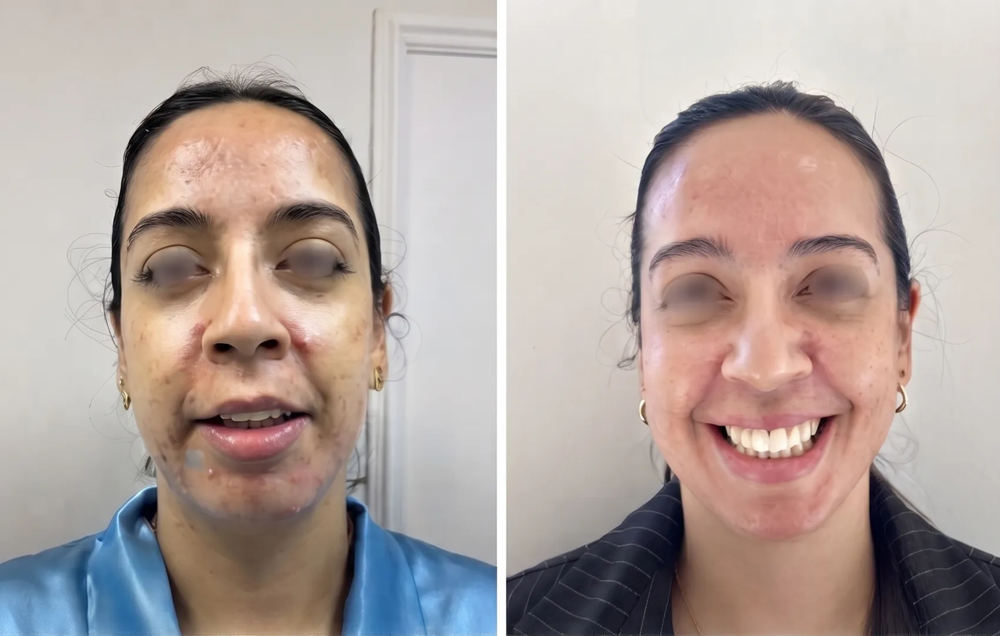
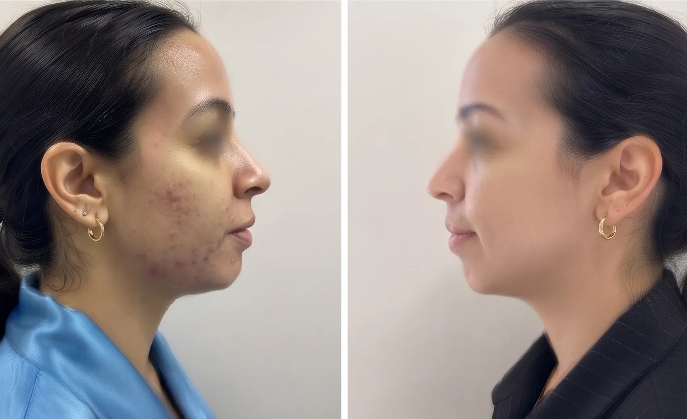
O resultado?
Uma pele completamente transformada. A Paloma finalmente pôde abandonar o excesso de maquiagem e voltar a se sentir bem ao se olhar no espelho.
Como ela mesma resumiu:
“Melhor escolha que fiz foi fechar meu tratamento com ela! Desde os 16 anos de idade passando em estética por estética e nada de resultado, encontrei a melhor profissional do mundo ❤️”
Dúvidas frequentes
Dúvidas comuns sobre os nossos tratamentos.
Tudo começa com um Diagnóstico de Pele aprofundado. A partir dele, montamos um plano 100% personalizado, combinando os tratamentos certos para a sua pele e ajustando cada etapa conforme a evolução. O objetivo é estimular o colágeno e devolver firmeza, viço e luminosidade de forma natural, sem botox e sem agulha.
Você não precisa escolher sozinha. Na avaliação, analisamos o seu tipo de pele, as suas queixas e a sua rotina. Com isso, indicamos o protocolo mais adequado e explicamos cada passo antes de começar.
Os tratamentos são pensados para serem confortáveis e, na maioria dos casos, você volta à rotina no mesmo dia. Alguns procedimentos podem deixar a pele levemente avermelhada por algumas horas. Todas as orientações de cuidado são passadas na avaliação.
Prova social
O que meus pacientes dizem:
Pacientes atendidos
+100
De satisfação
98%
Andre Vieira
3 meses atrás
Profissional muito qualificada, excelente atendimento muito bom recomendo.
Andre Vieira
3 meses atrás
Profissional muito qualificada, excelente atendimento muito bom recomendo.
Andre Vieira
3 meses atrás
Profissional muito qualificada, excelente atendimento muito bom recomendo.